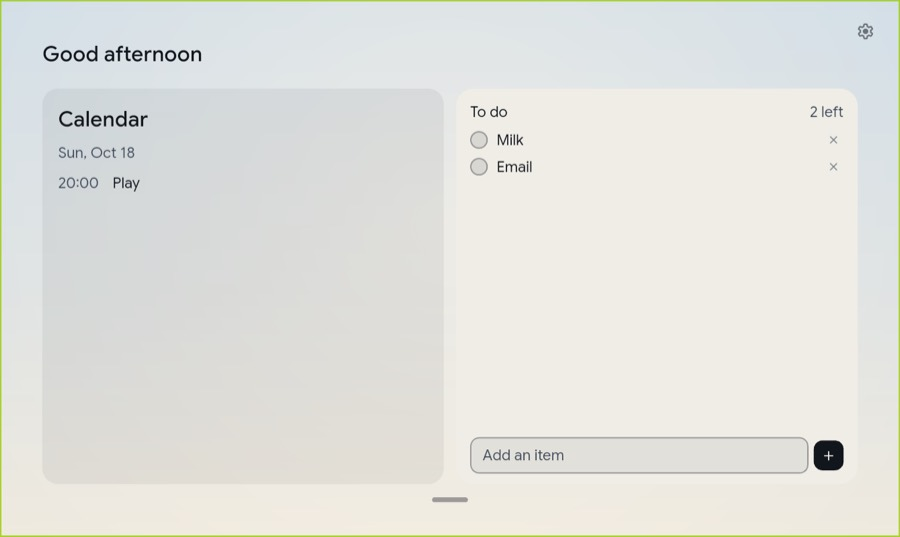

◷
Always-readable clock
A large clock over a photo frame, the same visual language as the SN-Launcher home screen. Made to be glanced at from across the room.
SKLauncher is a barebone launcher page from SN-Launcher: a photo frame, a big clock, and a clean app grid. No clutter, no extra noise — just the screen you leave on the wall.
Built for Android wall tablets. SKLauncher is available in the ef (ExtraFeature) build — see details below.

SKLauncher keeps the familiar SN-Launcher look — photo background, readable clock, app grid — and strips away everything a kiosk doesn't need.
A large clock over a photo frame, the same visual language as the SN-Launcher home screen. Made to be glanced at from across the room.
Your installed apps in a clean grid. No quick settings, no suggestions, no search chrome — just tap and launch.
SN-Launcher is designed for low-RAM Android tablets (1–4 GB target). The goal is to give e-waste hardware a useful second life.
These screenshots come from the SN-Launcher project docs — not mockups. SKLauncher uses the same home-screen visual language in a barebone page.


Whether you're mounting a tablet in the kitchen or exploring a simple kiosk setup, SKLauncher keeps the promise small and clear.
SKLauncher lives inside SN-Launcher. Install the ef build, open the launcher, and swipe to the SimpleKioskLauncher page.
Grab an ef APK from SN-Launcher releases. Pick the ABI that matches your device (most modern tablets: arm64-v8a).
Install the APK on your tablet and set SN-Launcher as your home screen. The ef build includes SKLauncher.
SKLauncher is the SimpleKioskLauncher page — photo frame, clock, and app grid. Barebone, as intended.
No marketing fog. If something is experimental or unverified, it says so.
SKLauncher (SimpleKioskLauncher) is a barebone launcher page in SN-Launcher. It keeps the same visual language as the home screen — photo frame, clock, app grid — and removes extras like quick settings, suggestions, and search.
No. SKLauncher is currently in the ef (ExtraFeature) build only. The reduced build deliberately keeps its page set to home + digest. SN-Launcher has two builds.
SN-Launcher targets Android tablets, especially low-RAM / repurposed hardware (1–4 GB class). Real hardware testing is an ongoing project process — check the SN-Launcher repo for the latest verified device notes.
No. It's an early, honest project. The page is designed to be useful and clear, but I'm not claiming fleet certification, enterprise support, or customer deployments that don't exist.
Open a GitHub issue at SimpleAppLauncher/SN-Launcher issues. Describe your device, use case, and constraints. That's the right place for an honest conversation.
This repo/page is under the PolyForm Noncommercial License 1.0.0 — Copyright SN-Launcher contributors. The SN-Launcher app repo has its own license and attribution files; bundled photos/fonts/icons keep their own licenses.